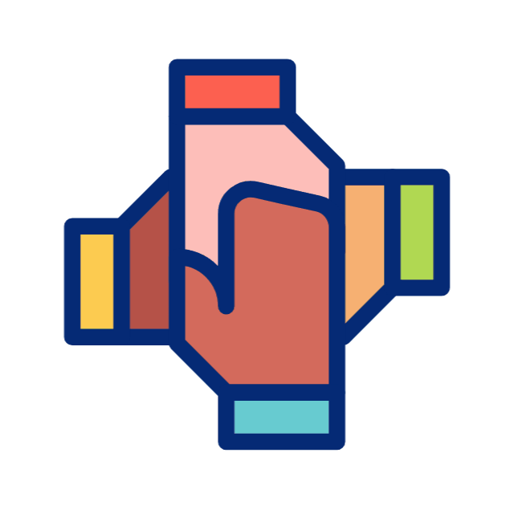

  <div class="container_ouco">
    
  </div>

  <div class="img-container">
    
  </div>

  <h2 class="title">Escolha um idioma e <span>treine a sua audição</span></h2>

  <div class="speed-control">
    <label for="speakingSpeed">Velocidade de fala:</label>
    <input type="range" id="speaking_Speed" name="speakingSpeed" min="0.5" max="2" step="0.01" [(ngModel)]="speakingSpeed" (change)="onSpeedChange($event)">
    <span>{{ speakingSpeed }}</span>
  </div>

  <div class="translate-container">
    <div class="input_container">
      <input type="text" [(ngModel)]="word" placeholder="Digite uma palavra ou uma frase ">
    </div>


    <div class="select">
      <select class="select-language" [(ngModel)]="language">
        <option value="en">Inglês</option>
        <option value="fr">Francês</option>
        <option value="pt-br">Português</option>
      </select>
    </div>
    <div class="button">
      <button (click)="speakWord()">Pronunciar</button>
    </div>
  </div>


  <h2 class="clique_ouça"><span>Clique nas seguintes imagens</span> e ouça</h2>

  <div class="no-images" *ngIf="currentIndex < 0">Clique em "Gerar Nova Imagem" para começar.</div>

  <div class="button-container">
    <button mat-raised-button color="primary" (click)="showNextImage()">Gerar Nova Imagem</button>
    <button mat-raised-button color="accent" [disabled]="!previousImage" (click)="showPreviousImage()">Revisar Imagem Anterior</button>
  </div>

  <div class="image-container">
    <div class="card" *ngIf="currentIndex >= 0 && currentIndex < images.length" [ngClass]="{ blink: images[currentIndex].description === spokenWord }">
      
      <div class="spoken-word" *ngIf="spokenWord === images[currentIndex].description">{{ spokenWord }}</div>
    </div>
  </div>

